FlmLnk looked like every other AI app released that year.
FlmLnk is a marketing tool for filmmakers. Most of the people using it are running their own distribution for the first time and are not marketers.
A sparkle avatar, a rocket icon, a co-pilot tagline, blue accents on a red brand. Individually small. Together they tell a filmmaker the tool was assembled from defaults, which matters for a product asking them to stake a launch on it.
This page covers the frame used to fix that, then six changes that came out of it. Each one follows the same shape as the log entry behind it: the screen, the problem, the change, and why it matters.
The frame
Every change traces back to one sentence.
Every change removes something that made the product feel unsure of itself. The thesis for the renovation
That sentence does more work than any single fix. It converts a long run of aesthetic opinions into one question any member of the team can answer, which is whether a given screen looks like it knows what it is.
Five principles sit underneath it. Every entry in the log is tagged to one of them, which is what keeps a renovation from drifting into personal taste.
- Brand carries the screen. Remove the generic AI signifiers and let the reel mark, the serif, and the poster art do the work.
- Clarity is a feature. Every element should either carry information or step aside. If it does neither it is noise, and noise costs the user attention they came to spend on their film.
- Acknowledge instantly. Feedback latency reads as breakage, so the system should never leave a user wondering whether it heard them.
- Personality is felt, not noticed. Texture and warmth are worth having up to the point where they start competing with the content.
- One accent, one voice. Consistency is what makes a product read as trustworthy.
How the work is recordedlayer two
The renovation is an append-only log rather than a document that gets rewritten. Every shipped change gets an entry in a fixed shape, covering the screen and its context, the problem before, the change after, why it matters, and the principle it traces to. Each entry also has a before and after frame sharing a base filename, so the two can always be lined up.
There are twenty-one entries so far, grouped into chapters. Those chapters cover individual screen fixes, a cross-screen redundancy audit, the Flow chat movement, and the public page movement. Changes that need more room get a case study of their own, which the log points to.
The practical benefit is that by the tenth change the discussion was shorter than it was at the first, because the principles had been settled once instead of being re-argued each time.
Stage one: look before touching
Before any screen was changed, two inspection reports were written. One covers Riverside Studio, a competitor in the same creator-tool space. The other covers FlmLnk, written to be read beside it.
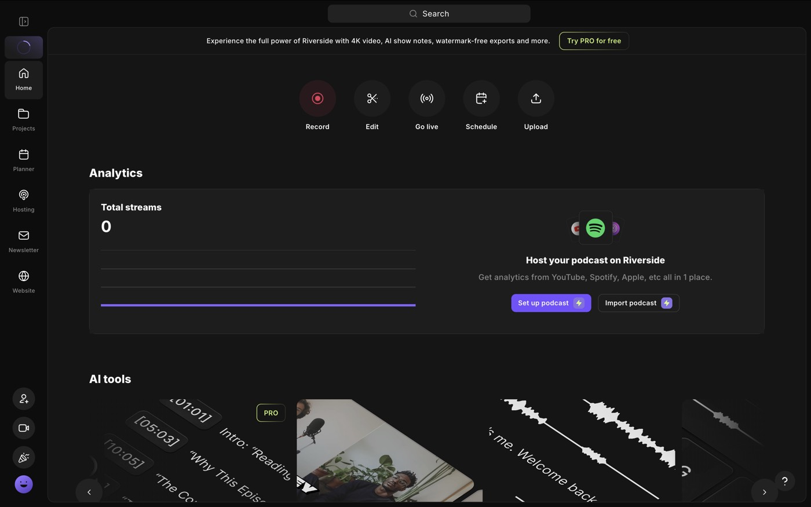
The FlmLnk report ends with a section that decided how the rest of the work was ordered. It separates confirmed bugs from design opinions. A bug is a fact and gets fixed. An opinion has to be argued and can be declined.
Without it, a renovation becomes one long list where a white-on-white theme bug and a preference about corner radius carry equal weight. With it, the work can be prioritised, and the opinions can be challenged by anyone on the team without slowing down the fixes.
Stage two: audit the screens against each other
The second stage looked at four screens together rather than one at a time, so faults that repeat across screens would show up.
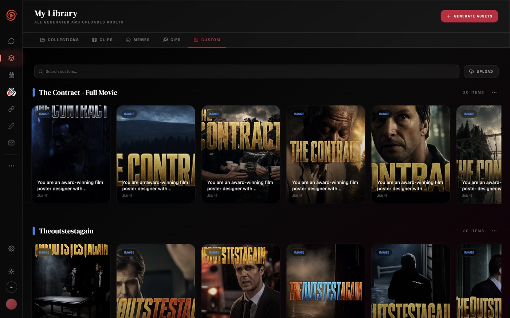
The audit then did something that shaped the entire renovation. Rather than inventing a new standard, it named a screen that was already right and made the others match it.
The reference screen is Clips. It already does the right things: real titles from content, one badge that carries real information, the label sits in a footer instead of over the art. Every finding below is really make the other screens behave like Clips. From the redundancy and clarity audit
The standard already exists in the product and the team has already accepted it, so each finding becomes a comparison against a live screen rather than a proposal.
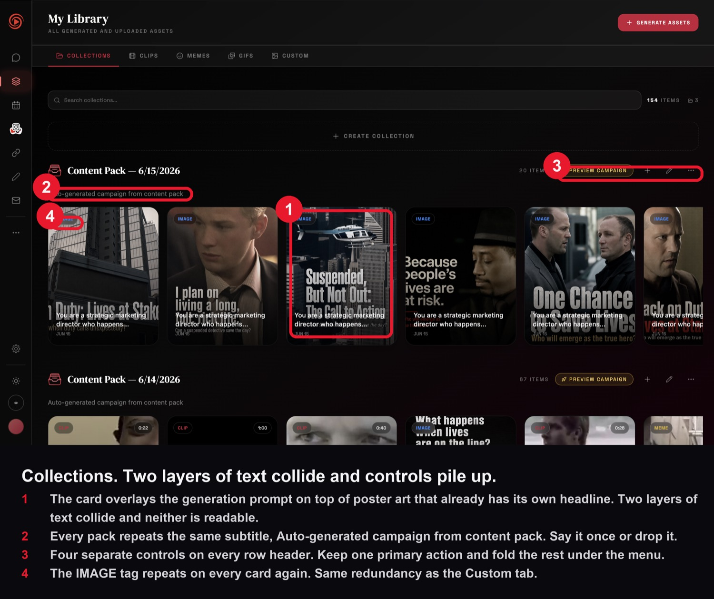
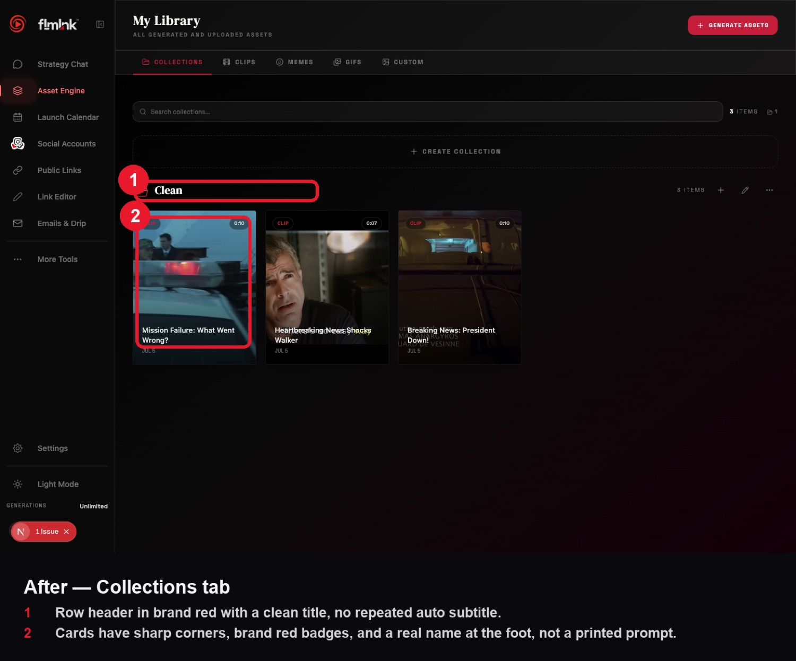
The public page
The public profile at /f/<slug> is the only screen a stranger sees. It got its own teardown because it had borrowed its design language from a streaming service.
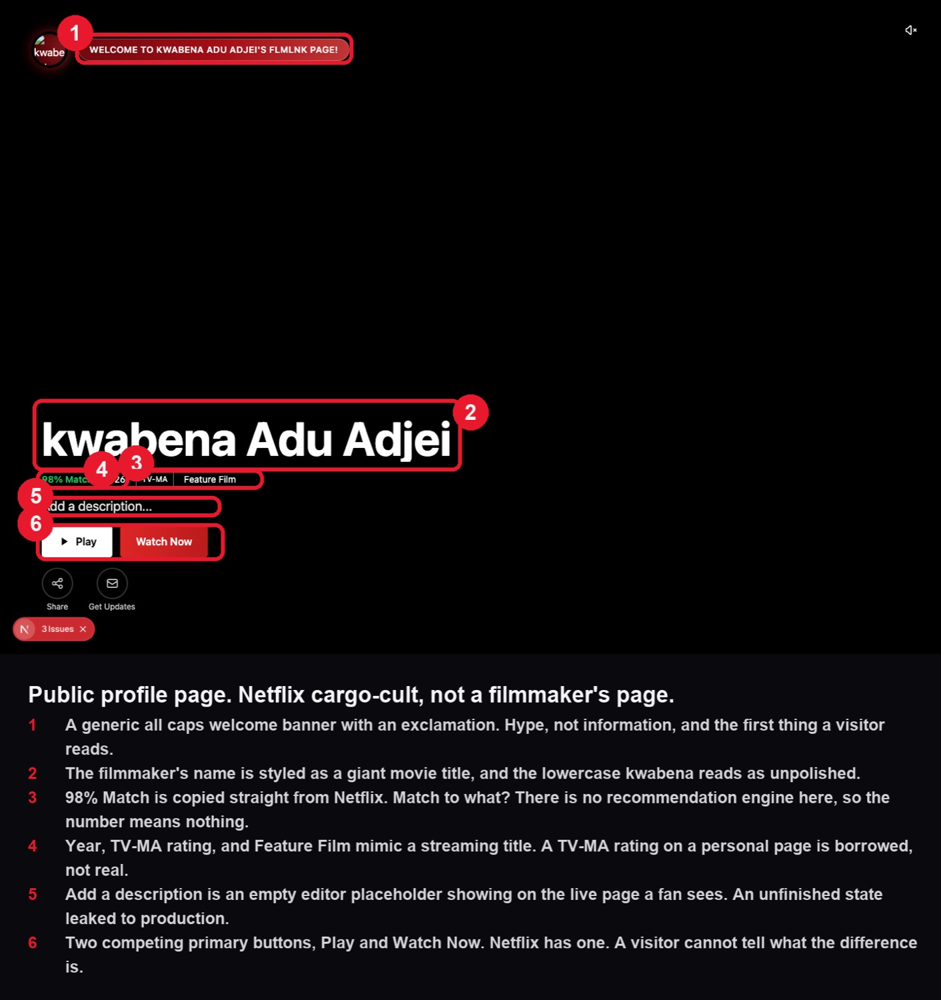
Four of the six findings:
A 98 percent match score copied from Netflix. Match to what? There is no recommendation engine here, so the number is decoration wearing the costume of data.
A TV-MA rating and a Feature Film label mimicking a streaming title. A content rating on a personal page is borrowed rather than earned.
An empty editor placeholder reading "Add a description" rendering on the live page a fan sees. An unfinished state leaked to production.
Two competing primary buttons, Play and Watch Now. Netflix has one. A visitor cannot tell what the difference is, so the screen asks them to guess.
Every one of these is the same mistake: copying the surface of a product that earned those elements, into a product that has not. A match score means something at Netflix because a recommendation engine computes it. Here it is a number with nothing behind it, and a visitor can feel that even if they cannot name it.
The section that already worked was Clips and Reels, so it became the model for the rest, which is the same method the cross-screen audit used.
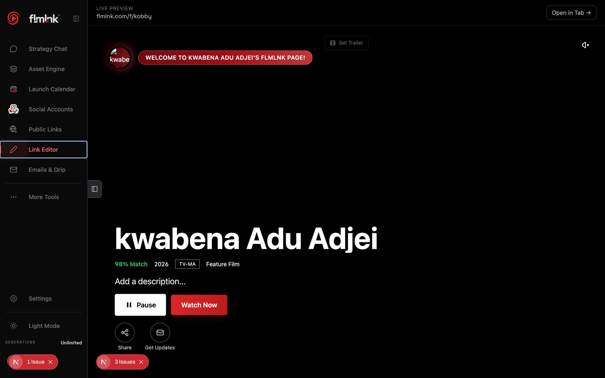
Stage three: the fixes
What follows is the third stage, screen by screen. The comparison below opens both builds side by side so the distance is visible before the individual changes.
How far back it goes
The frames below are not archive screenshots. Both were captured on the same machine on the same afternoon, by checking out the June build into a separate working copy, running it alongside the current branch, and loading the same account at the same window size in both.
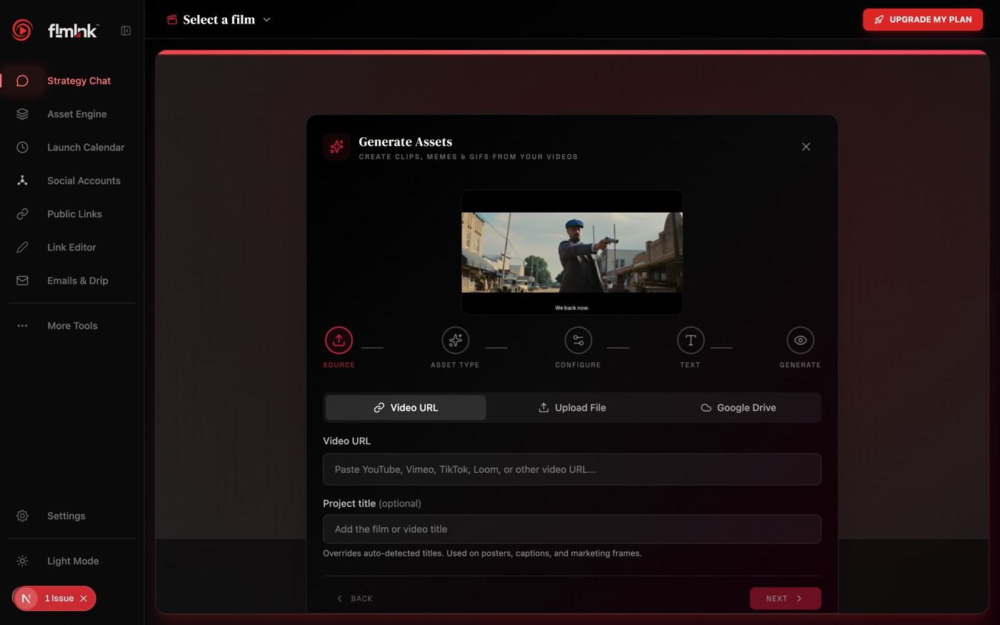
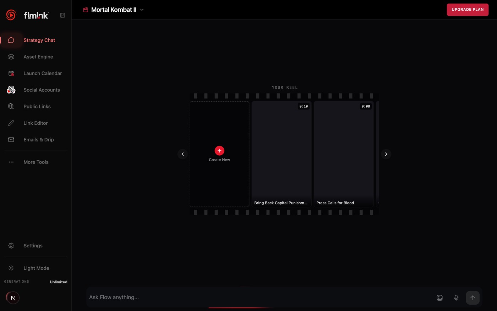
The problem. The June build opens by stacking two modals on top of the dashboard, so the first thing a filmmaker sees is a dialog covering the product, with a second dialog behind it. The rocket sits on Upgrade my plan, and no film is selected.
The change. The current build opens on the reel itself. There is no modal, the film is already selected, the rocket is gone, and the composer sits at the bottom ready for a first message.
Why it matters. Opening a product with a dialog spends the user's first attention on dismissing something. Every entry in this case study is a smaller version of that same decision.
1 · Dashboard home
The home screen was the first entry in the log, and it set the pattern for the rest of the work.


The problem. Three step cards repeated links that already existed in the sidebar. A five-panel carousel hid four of its five panels behind dots. Create was a third way into the same flow, so no single action was primary. The screen was carrying three mental models at once, which were a guided wizard, an open canvas, and a dashboard.
The change. One clapperboard slate carries the same three steps, and the competing containers are gone.
Why it matters. A new user could not tell where to start, and a returning user was looking at cards that no longer applied to them. Adjusting spacing would not have fixed either, because the fault was in the structure rather than the styling. The slate also states the product in film language, which is the audience the tool is built for.
2 · Generate Assets
This entry is an architecture decision rather than a visual one, recorded in the same log as the rest.


The problem. Generation ran inside a modal. It is a five-step flow that ends in real output, and it is the longest task in the product. In the before frame the step rail is compressed and the content scrolls inside the card, which is a sign the container was already too small for the work.
The change. The same five steps now run as a full page instead of a floating card.
Why it matters. A modal is the pattern for something a user dismisses to get back to their real task. Generation is the real task. Matching the container to the weight of the work removes a quiet contradiction between what the product says and what it does.
3 · Flow chat
Flow is the assistant inside FlmLnk and the surface filmmakers spend the most time in. It received five logged entries rather than a single fix, covering identity, clarity, trust, comfort and focus.
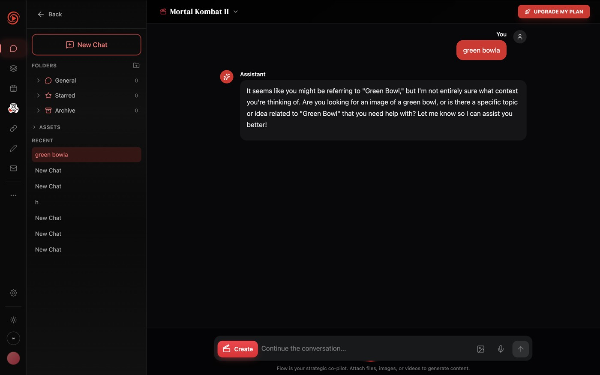
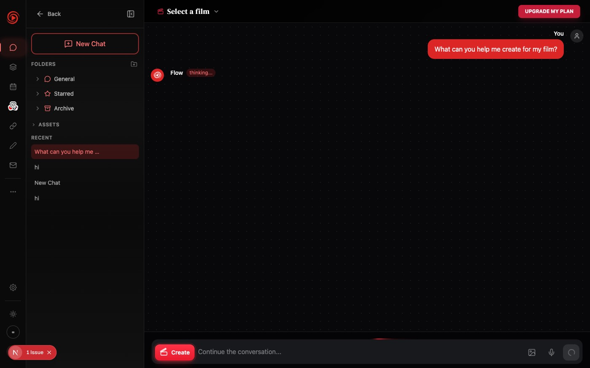
The problem. The chat wore the generic AI costume. A sparkle avatar, which is the common signal for "this is an AI", sat next to the label "Assistant". The history filled with rows reading "New Chat", because opening a chat saved an empty session immediately. Image cards printed the raw generation prompt as their caption, which was identical across a whole row and buried the poster art.
The change. The sparkle avatar became the FlmLnk reel mark and "Assistant" became "Flow". A chat is now a draft until the first message is sent, so the history only holds sessions that exist. Prompt captions were removed from the cards and moved into the detail view.
Why it matters. A borrowed look is a borrowed identity. Every one of those defaults told a filmmaker that the product was assembled rather than built, and the history in particular was unusable for its actual purpose, which is finding a conversation again.
The change with the largest effect on trust does not appear in a screenshot. The thinking indicator used to fire only after a database round trip and the model's first token, so nothing happened for a moment after the user hit send. That moment is where a user decides the product is broken. It now fires as soon as the message is sent, before any network request runs.
Model latency did not change. The product simply stopped leaving people uncertain about whether it had heard them, which is one of the cheapest trust improvements available in most software.
The audit behind those changes
Before any of it was rebuilt, the screen was marked up and each fault written out with the reason it mattered. The numbered notes below are the working document, not a summary made afterwards.
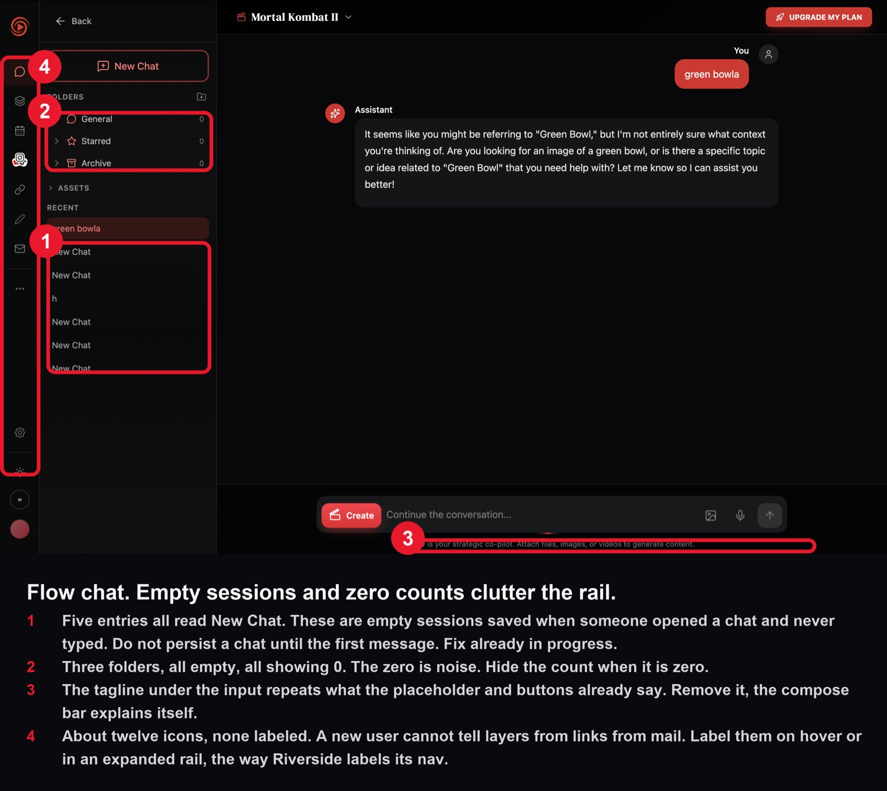
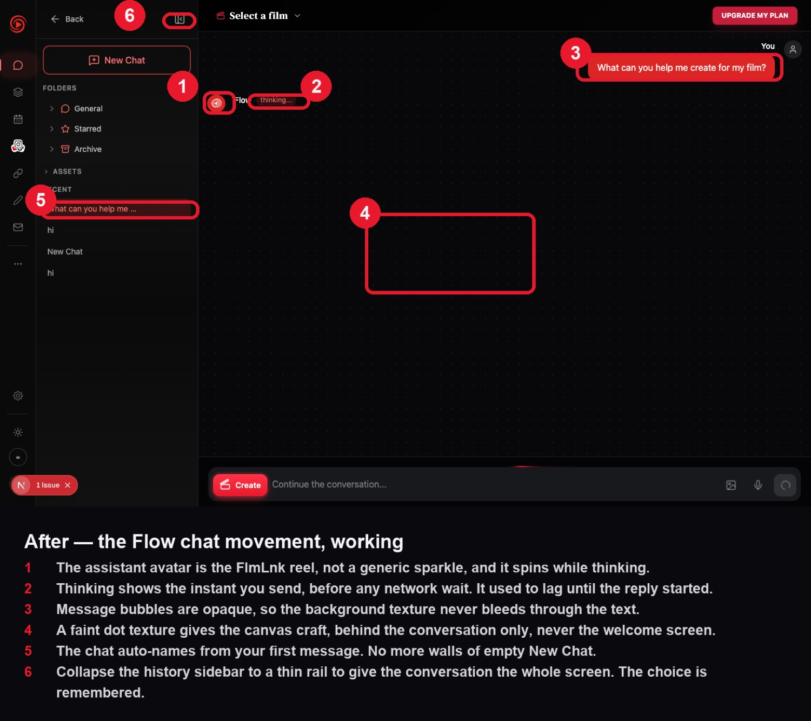
All five Flow chat entrieslayer two
07, identity. Sparkle avatar to the reel mark. The rocket was dropped from Upgrade and swapped for an eye on Preview, because a rocket means launch and the action is look. The blue image badge and accent bar moved to the film-red token. The co-pilot tagline was removed. The three in-chat sparkles became a telescope for researching, a spinner for thinking, and a plus for generate. Asset and poster cards were given sharp corners under a "soft chrome, sharp posters" rule, so a poster reads as a poster rather than an app tile.
08, clarity. Image card captions removed, prompts moved to the detail view, chats saved only after a first message, and zero counts hidden on empty folders.
09, trust. The thinking indicator moved ahead of the save round trip and the first token, and the redundant pill spinner was removed.
10, comfort. The conversation sat on a flat black void that read as a placeholder. A faint dot stipple now sits behind the conversation only, never behind the welcome screen and never over content, and message bubbles were made opaque so the texture cannot show through text.
11, focus. The conversation was pinned to a narrow centred column that wasted the panel. It now uses a fitted measure that reclaims the space without letting lines run too long, and the history sidebar collapses to a rail and remembers that choice.
4 · Email composer
This was the densest screen in the product.
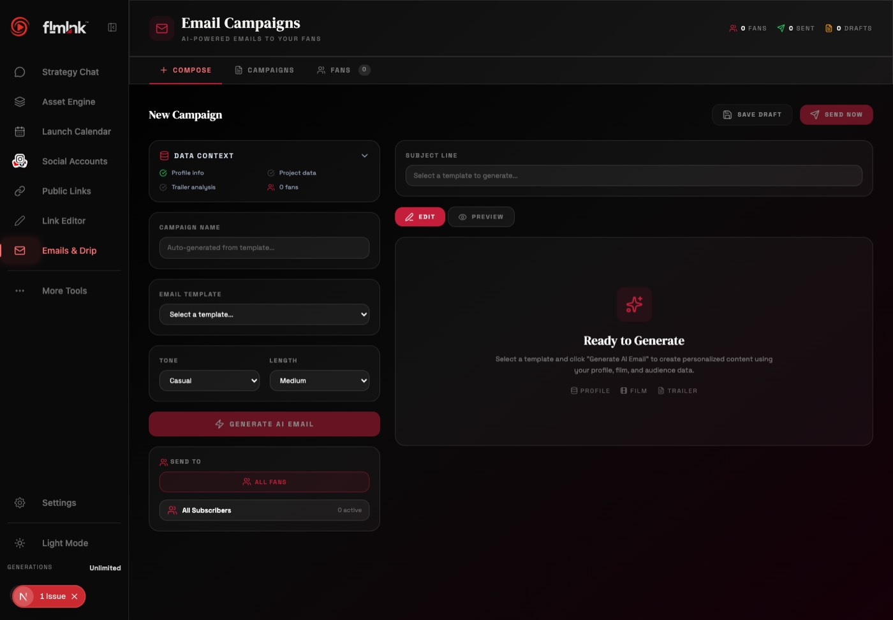
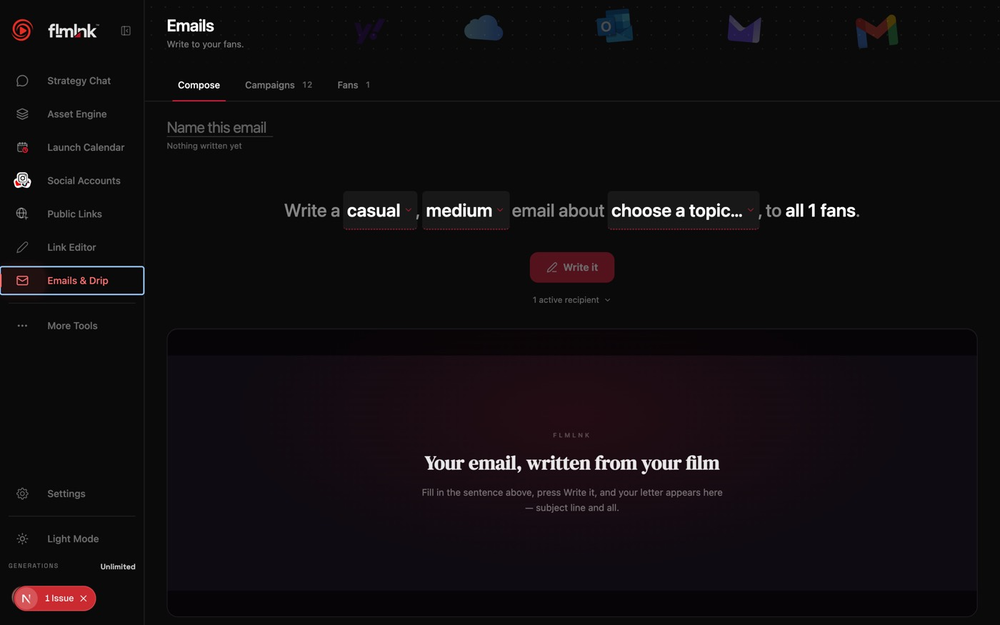
The problem. The screen presented data-context chips, a campaign name, a template picker, tone and length dropdowns, a send-to panel and a Generate button, most of it labelled in capitals. All of it had to be understood before anything could happen, and the person using it is a filmmaker rather than a marketer.
The change. The same options are now a single sentence with blanks in it, reading "Write a casual, medium email about [topic], to all your fans", followed by a button that says "Write it".
Why it matters. None of the options were removed. They were moved into a structure people already know how to read, so the screen explains itself instead of requiring the user to learn it first.
5 · Asset library
The library holds everything the product generates, so it is the screen a filmmaker returns to most often, and it is where the cross-screen audit found the worst repetition.


The problem. Every card printed its raw generation prompt as a caption. A whole row is generated from one prompt, so the identical sentence appeared on every card in that row, covering the artwork it was meant to describe.
The change. Each asset now carries a real name taken from its own content, with the date and a score beneath it. The prompt moved into the detail view.
Why it matters. A caption repeated five times across a row carries no information, and it was hiding the one thing on screen that did. This is the behaviour Clips already had, applied to the rest of the library.
6 · Public Links
Every screen above is used by the filmmaker. This one is seen by their audience.
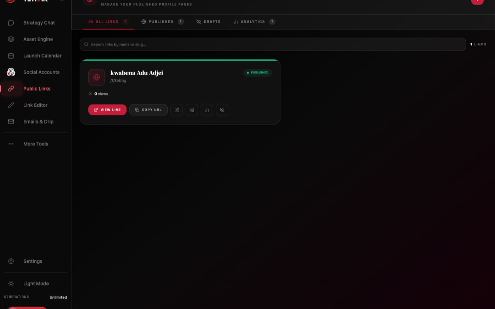
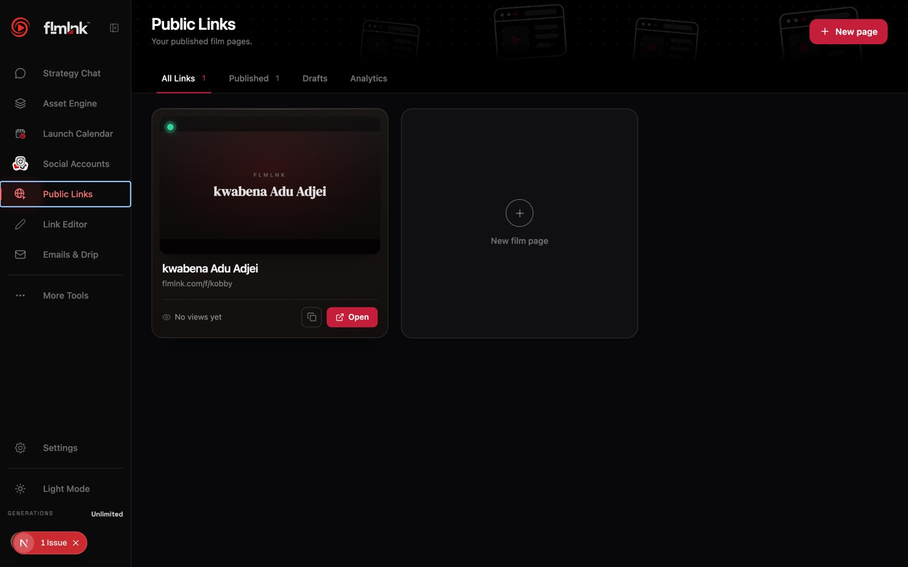
The problem. An all-caps subtitle, a status pill, and six identical icon buttons under each row. The screen described what it was instead of showing the page the filmmaker had made.
The change. Each published page now renders as a preview of itself, the actions reduce to one primary button labelled Open, and the empty slot invites the next page rather than sitting unused.
Why it matters. A published film page carries more reputational weight than anything else in the product, because filmmakers send it to people they are trying to impress. Showing the artefact is more useful than describing it.
7 · Settings, as a document
Personal Info was thirty-four form controls, all open at once, most of them empty most of the time. Settings is checked often and edited rarely, so it should read as a document and only become a form at the moment you touch a field.
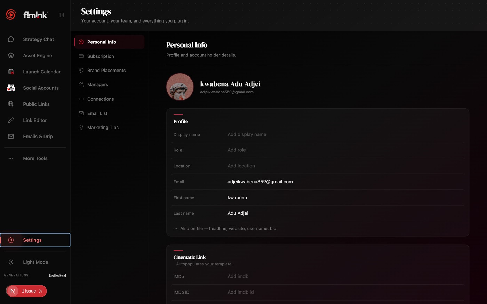
Current state in production
This frame was captured from the live product while this page was being written.
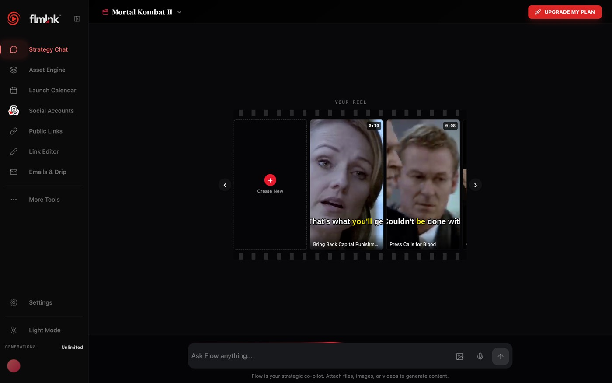
A renovation of this size ships in stages, and the log runs ahead of the deploy. Showing the current state is more useful than showing only the frames where the work is complete, and tracking what is still outstanding is part of what the log is for.
How the decisions were made
Every screen is checked against one sentence, written down so anyone can apply it without asking:
Cinematic glass surfaces, film strip and letterbox as the signature, red for action only, real footage over fake. The north star for the renovation
Consistency is what makes people trust an interface, not additional effects. A contributor who reads that sentence can build a new screen that belongs, which is the point of writing it down.
Three questions asked of every screen
- Will a person feel overwhelmed or at ease? A first-time marketer arrives already unsure. Anything on screen that neither informs nor steps aside is spending attention they need for their film.
- Can they navigate without being taught? The nav rail always pairs an icon with a label, because an icon-only rail asks a new user to recognise twelve symbols before they can move.
- Could this be any other product? If a screenshot could belong to any dashboard, the brand is doing no work and the product reads as assembled.
Building on what people already recognise
The surface language is glass: frosted translucent panels over dark grounds and film stills. That choice is borrowed on purpose. Apple TV, Apple Music and visionOS have already taught people to read that treatment as expensive, so the product inherits the recognition instead of spending a user's attention teaching a new language.
The same reasoning is why the work treats appearance as functional rather than decorative. People judge an attractive interface as easier to use and stay patient with it longer, so polish buys the product time to explain itself. If a screen catches the eye it earns a second look, and a second look is where a filmmaker finds out what the tool actually does.
The part that cannot be copied
Film strip sprocket holes, letterbox bars, a faint grain, the red play triangle. Used sparingly, and only enough that a screenshot is identifiably this product rather than a dashboard. No competitor in the space has film strip detailing, which makes it the one element that cannot be matched by a team choosing the same component library.
What was ruled out, and why
- Neumorphism. Soft extruded surfaces die on dark grounds and fail contrast.
- Claymorphism. Puffy and toy-like, wrong for a tool people stake a film launch on.
- Flat generic dark. That is the competitor. Matching it makes the product a commodity.
- Red on anything decorative. Used anywhere other than actions and active state, it stops meaning act.
The fixes were then ordered by what a person notices first. Anything that made the product look broken, such as black empty thumbnails or raw markdown rendering in the assistant, came before anything that made it look better.
This case is reasoned rather than measured. The second one asks the same question with measurement instead of argument, and the measurement turned out to be faulty.